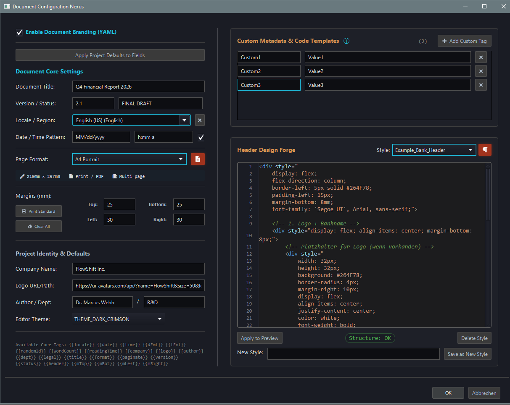
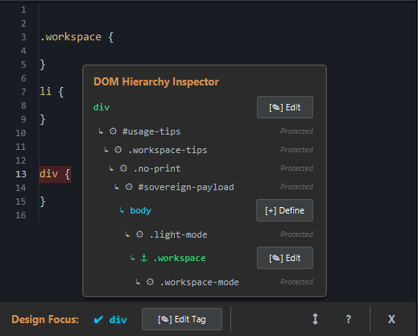

FlowShift Document Forge ist ein vielseitiger
Hybrid-Dokumenten-Builder.
Er öffnet neue Wege abseits traditioneller
Editoren,
indem er Markdown, HTML5/CSS3 und YAML nahtlos in einem souveränen Workflow vereint.
Als Präzisionsinstrument für Ihre Dokumente verbindet es
strukturierten Inhalt
mit professionellem Design. Robust, schnell
und mit lokaler Datensouveränität.
📝
So unbeschwert wie ein Notizblock und so präzise wie eine Schmiede.
Schreiben Sie einfach los: ohne Hürden und ganz ohne Syntax-Zwang. 🛠️
Perfekt für
Kreative & Unternehmen
Ein vielseitiges Instrument für verschiedenste Fachbereiche
Was Sie erstellen können
Von technischer Dokumentation bis zu kreativen Projekten
| 🏭 Industrie | ⚙️ Anleitungen & Guides | 📄 Technische Handbücher |
| 🔧 Maschineninspektionen | 📋 Wartung & Sicherheit | |
| 🏦 Finanzen | 📊 Berichte & Whitepapers | 🏦 Kreditbestätigungen |
| ✅ Aufgabenlisten | 📈 Quartalsberichte | |
| 🎨 Kreativ | 🌐 Einfache Webseiten | 🎓 Tutorials & Lernmaterial |
| 📚 eBooks & Plakate | 📱 Prototypen & Mockups | |
| 📋 Büro | 📝 Besprechungsprotokolle | 📋 Checklisten |
| 💳 Visitenkarten | 📅 Terminplaner |
Warum FlowShift?
Statische Dokumente vs. lebendige Engineering-Logik im direkten Vergleich
| Aspekt | Reines PDF | FlowShift-Dokument |
|---|---|---|
| Format | Endformat – fertig, abgeschlossen |
✅ Quelltext (Markdown/HTML) + bleibt erhalten |
| Änderbarkeit | Nur mit Spezialsoftware – oft neu erstellen |
✅ Jederzeit im Editor anpassbar |
| Nachvollziehbarkeit | Blackbox – wie entstanden? |
✅ Transparent + aus Text generiert |
| Weiterverwendung | Meist toter Endpunkt | ✅ Quelltext bleibt erhalten Export jederzeit (PDF, HTML, Druck) |
Bildvorschau
Ein Einblick in das Präzisions-Interface und den Workspace der Dokumentenschmiede




Der Sovereign Source Mapper
Bewegen Sie die Maus über ein Element in der Vorschau, ein blauer
Rahmen erscheint.
Ein Klick springt sofort zur exakten Zeile in Ihrem Markdown und der CSS Forge. Kein Suchen,
kein
Scrollen.
Was Sie sehen, ist genau da, wo Sie sein müssen.
Hauptfunktionen
Der Maschinenraum für alle, die das „Layout-Lotto“ endgültig beenden wollen
| ✅ ISO‑konformer Export | A4, Letter, Web – High-Fidelity HTML- & PDF-Ausgabe. |
| ✅ Intelligente PDFs | Durchsuchbar, selektierbar und strukturell sauber – voll editierbar in Adobe Acrobat, InDesign & Co. |
| ✅ Source Swap & Highlighting |
Flimmerfreies Echtzeit-Rendering via WebKit-Injection mit Syntax-Highlighting für maximale Code-Klarheit. |
| 🚀 Source-Link Navigation | Disruptiver Meilenstein: Ein Klick in der WebKit-Vorschau lässt den Editor sofort zur Quellzeile springen und führt einen Autoselect aus. Sofortige Bearbeitung ohne Suchaufwand. |
| ✅ Smarte Formatierung | Ein-Klick Auto‑Fix für Markdown, HTML und CSS zur Wahrung der strukturellen Integrität (Strg+Umschalt+F). |
| ✅ Global Precision Engine |
Vollständige I18n- & L10n-Unterstützung mit automatischer Erkennung der
Systemsprache.
Intelligente Datums- und Zeitmuster passen sich automatisch an regionale Standards an
(ISO/DIN vs. US/ANSI).
🆕 Smart YAML-Sync: Die Engine bewahrt händische YAML-Änderungen intelligent, während sie sinnvolle systembasierte Standardwerte für nahtlose internationale Workflows bereitstellt. Patterns werden nur bei händischer Änderung fixiert – maximale Datenintegrität. |
| ✅ CSS-Forge & Design-Inspektor |
Hochleistungs-Styling-Engine mit dediziertem Design-Inspektor.
Identifiziert fehlende Klassen sofort per Klick und offenbart tiefe
Architektur-Einblicke.
🆕 DOM-Hierarchie-Inspektor: Explorieren Sie visuell den Live-DOM-Baum, um Element-Schachtelungen zu verstehen und zu sehen, wie Ihr CSS direkt mit der Kernstruktur des Dokuments interagiert. |
| ✅ Styling ist Kollisionsfrei |
Nutzer-CSS ist durch Layered Namespaces strikt isoliert. Gestalten Sie Ihr Dokument in völliger Freiheit, ohne die App-UI zu beeinträchtigen. |
| ✅ Diagnose-Linter & Design-Radar |
Echtzeit-Strukturprüfung mit hochwertigen Inline-Popups. Die globale Statusleisten-Zusammenfassung spürt die häufigsten Fehler proaktiv auf und liefert intelligente Korrektur-Tipps für einen reibungslosen Workflow. |
| ✅ Präzisions-Slicer | Physische 3,78 px/mm Geometrie für maßstabsgetreues 1:1 Rendering. Im Paginierungsmodus werden zu große Elemente akkurat auf Folgeseiten verschoben, während die strukturelle Integrität gewahrt bleibt. Perfekte Synergie aus automatisierter Logik und manuellen Seitenumbrüchen über dedizierte Steuerelemente, für die absolute Souveränität über ein unfragmentiertes Dokument-Layout. Inklusive automatischer Bildskalierung, damit visuelle Inhalte stets bündig ins Seitenformat passen (max. 100%) ohne das Layout zu sprengen. |
| ✅ Custom Placeholders | Minimalistische, YAML-basierte Dateninjektion für dynamische Vorlagen und automatisierte Dokumentenerzeugung. |
🗺️ Roadmap & Geplante Features
| ⏳ Daten‑gesteuerte Dokumente | Automatische Befüllung von Platzhaltern aus CSV, Excel oder JSON – für Serienbriefe, Reports und Verträge. |
| ⏳ Batch‑Verarbeitung | Mehrere Dokumente in einem Durchlauf generieren - z.B. monatliche Berichte, Rechnungen, Serienbriefe. |
| ⏳ API-Zugang | Dokumentenerzeugung über REST-API – für Integration in eigene Workflows. |
Kernphilosophie
| Prinzip | Beschreibung |
|---|---|
| Souveränität | Absolute Kontrolle über Daten und Design. Ihr Dokument, Ihr Gesetz. |
| Effizienz | Maximale geistige Leistung. Kein Ballast. Kein Warten. |
| Präzision | Pixelgenaue Darstellung für A4, PDF und Web. |
Der FlowShift Editor verwandelt komplexe Ideen in perfekt formatierte Dokumente,
entwickelt für Profis, die absolute Meisterschaft über ihre Daten verlangen.
Eine lokale, datensouveräne Alternative zu Cloud-Systemen.
Unterstützte Dokumentformate
ISO/DIN A-Reihe (International)
| Format | Abmessungen | Verwendung |
|---|---|---|
| A0 | 841 × 1189 mm | Plakate, technische Zeichnungen |
| A1 | 594 × 841 mm | Plakate, Flipcharts |
| A2 | 420 × 594 mm | Präsentationen, Zeitungen |
| A3 | 297 × 420 mm | Magazine, Diagramme |
| A4 Hochformat | 210 × 297 mm | Briefe, Berichte, Formulare |
| A4 Querformat | 297 × 210 mm | Breitformat-Präsentationen |
| A5 Hochformat | 148 × 210 mm | Broschüren, Notizblöcke |
| A5 Querformat | 210 × 148 mm | Gefaltete Broschüren |
| A6 | 105 × 148 mm | Postkarten, Flyer |
📌 US/ANSI Standards (Nordamerika)
| Format | Abmessungen | Verwendung |
|---|---|---|
| Letter | 215.9 × 279.4 mm | Geschäftskorrespondenz |
| Legal | 215.9 × 355.6 mm | Rechtsdokumente, Verträge |
| Tabloid | 279.4 × 431.8 mm | Zeitungen, Tabellen |
| Executive | 184.15 × 266.7 mm | Regierungsdokumente |
🎴 Spezialformate
| Format | Abmessungen | Verwendung |
|---|---|---|
| Business Card (EU) | 85 × 55 mm | Europäische Visitenkarten |
| Business Card (US) | 89 × 51 mm | US-Visitenkarten |
| Credit Card (ID-1) | 85.6 × 53.98 mm | Zahlungskarten, Ausweise |
🌐 Web & Bildschirmformate
| Format | Abmessungen | Verwendung |
|---|---|---|
| Web Wide | 100% Breite | Responsive Webinhalte |
| Web Reading | 800px Breite | Optimierte Lesansicht |
| Social Square | 200 × 200 mm | Social-Media-Grafiken |
Technische Grundlage
Entwickelt mit Java 23 & Apache Maven, vereint FlowShift die Stabilität einer nativen Desktop-Powerhouse mit den unendlichen Styling-Möglichkeiten moderner Webtechnologien.
| Komponente | Technologie |
|---|---|
| Build-System | Apache Maven (Projekt-Lebenszyklus & Dependency-Management) |
| Engine & Runtime | JavaSE-23 (Zulu) mit integriertem JavaFX (WebKit Core, FXML) |
| Markdown-Kern | Flexmark-Java v0.64.8 (Erweiterungen: YAML, Tabellen, Attribute) |
| Rich Text | RichTextFX v0.11.7 |
| CSS-Architektur | Layered DOM Hierarchy (Isolierte .workspace / .page / .content Namensebenen) |
| Koordinatensystem | Physical-to-Digital Mapping (3,78 px/mm für maßstabsgetreues 1:1 Rendering) |
Early Access Programm 2026
🚀 Seien Sie unter den Ersten
Melden Sie sich für den Early Access an und helfen Sie, die Zukunft zu gestalten.
💰 Early Access Preis: 59 € (einmalig) · Später 89 €
⚡ Begrenzte Vorschau · Q3 2026 ⚡
Kontakt & Rechtliches
Sovereign Commercial License
💰 Preis: 59 € (Early Access) · 89 € (nach Release)
Einmalzahlung – keine Abos, keine
versteckten Kosten.
Copyright © {2025-PRESENT} FlowShift Softlabs. Alle Rechte vorbehalten.
Diese Software ist ein kommerzielles Produkt. Alle Rechte sind vorbehalten. Kein Teil dieser Software darf ohne Genehmigung reproduziert werden.
— Unser Versprechen: Dauerhafte und bedingungslose Rechte für Lizenznehmer. —